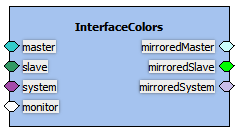

Bus Interfaces provide the connection points for the components. The access details are defined within the containing component, but the connections are defined in the design. Only compatible bus interfaces can be connected. The bus interface mode is indicated using the following colors:

Bus interfaces can be re-positioned by drag-dropping.
The Interface Editor shows the selected bus interface bus definition, abstraction definition, name, interface mode and description as defined in the containing component. They are only editable if the bus interface is a draft. Otherwise all changes must be made in the containing component.
Port maps shows the mapping of logical ports on the bus to the physical ports in the containing component.
Exclude can be set to exclude the logical port from the port maps of the bus interface within this design.
Exclude can be set to exclude the logical port from the port maps of the bus interface within this design.